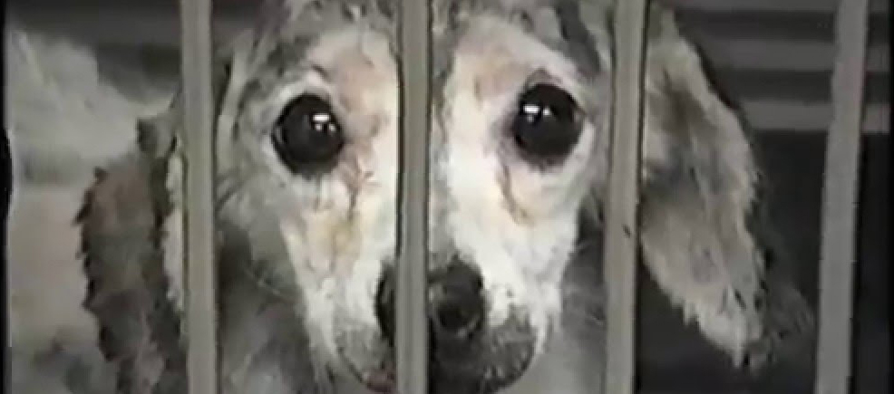

ANIMAL TESTING

The Humane Society of the United States says they documented experiments at a drug testing lab in Michigan, experiments they claim are funded in part by UVM. University officials tell WCAX News they did not fund experiments involving dogs at a testing facility in Michigan. Here's what the Humane Society is alleging. They put an undercover investigator inside the Charles River Laboratories in Michigan, recording video secretly. The society alleges the labs performed tests on beagles that amounted to torture and led the dogs to be euthanized.
Animal testing, also known as animal experimentation, animal research and in vivo testing, is the use of non-human animals in experiments that seek to control the variables that affect the behavior or biological system under study. This approach can be contrasted with field studies in which animals are observed in their natural environments or habitats. Experimental research with animals is usually conducted in universities, medical schools, pharmaceutical companies, defense establishments and commercial facilities that provide animal-testing services to industry.
If lack of human relevance is the fatal flaw of “animal models,” then a switch to human-relevant research tools is the logical solution. The National Research Council in the United States has expressed its vision of “a not-so-distant future in which virtually all routine toxicity testing would be conducted in human cells or cell lines”, and science leaders around the world have echoed this view.
There were also 8,898 experiments on primates. The use of new world monkeys (marmosets, tamarins) has increased by 8% and the use of old world monkeys (macaques and baboons) increased by 49%. Baboons were used in France (149 experiments), Spain (32 experiments) and Germany (2 experiments). However, we have conducted a more recent analysis based on reports from EU countries. According to our analysis published in alternatives journal, Altex, the number of experiments has risen to 13.1 million per year across the 28 member states of the European Union, an increase of 14% in 2014.